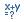

The Registers view of the Debug perspective lists information about the registers in a selected stack frame.
You can view information about the registers in a selected stack frame. Values that have changed are highlighted in the Registers view when your program stops.
The table below lists the icons displayed in the Registers view toolbar.
| Command |
Name |
Description |
|
Select All |
Select all the editor content. |
|
Copy Registers |
Copies the register names and contents to the clipboard. |
|
Enable |
Enables the selected register. |
|
Disable |
Disables the selected register. |
|
Format |
Select a format type. Choices include: BInary, Decimal, Natural, and hexadecimal. |
|
Find... |
Open the Find dialog which allows you to find specific elements within the view. |
|
Change Value... |
Open the Set Value dialog to change the selected registers value. |
|
Add Register Group |
Open the Register Group dialog which allows you to define a register group that is shown in the Registers view. |
|
Restore Default Register Groups |
Restores the original register groups. |
|
Edit Register Group |
Open the Register Group dialog to edit the selected register group. |
|
Remove Register Group |
Removes the currently selected register group. |
 |
Add Watchpoint (C/C++)... |
Add watchpoints(Not supported by the current version. It will be supported in the future versions.). |
 |
Watch |
Converts the selected register into a watch expression. |